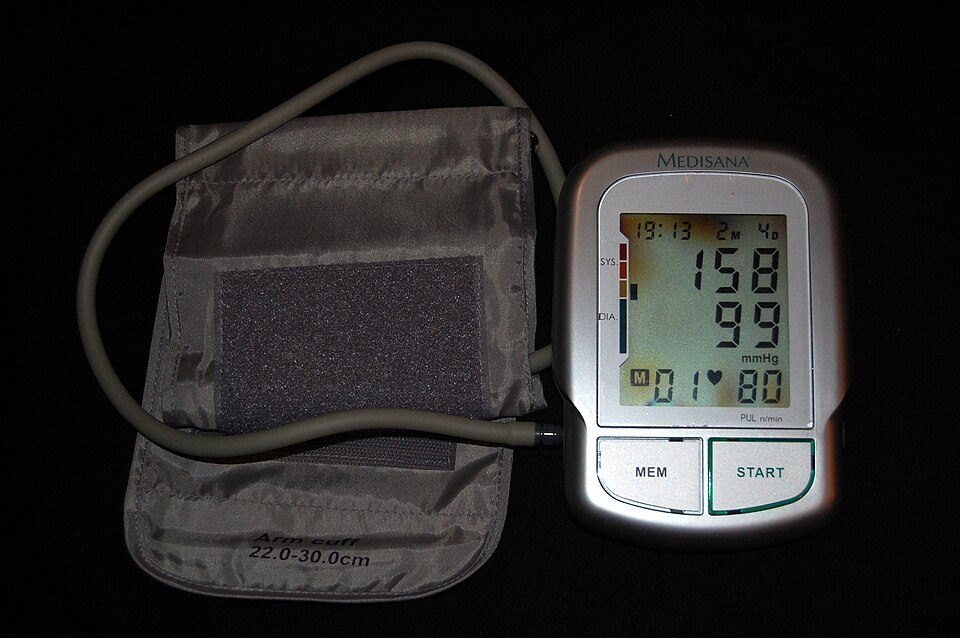

El enemigo silencioso del cerebro
La hipertensión arterial es el principal factor de riesgo de ictus que se puede cambiar: está detrás de aproximadamente la mitad de todos los ictus. También es un factor de riesgo importante de demencia vascular y de alzhéimer. Y casi nunca da síntomas: muchas personas no saben que la tienen hasta que sufren un ictus o un infarto. En España, alrededor de un tercio de los adultos son hipertensos, y una parte importante no lo sabe o no está bien controlada.
Qué hace la tensión alta al cerebro
- Daña las arterias pequeñas: las paredes se engrosan y se endurecen (enfermedad de pequeño vaso). Aparecen pequeños infartos silenciosos (lacunas), lesiones en la sustancia blanca y microhemorragias que se ven en la resonancia. Con los años producen lentitud, problemas de atención y de la marcha y, al final, demencia.
- Acelera la aterosclerosis en las carótidas y las arterias grandes, que se estrechan o generan coágulos.
- Rompe arterias: es la causa principal de la hemorragia cerebral, y favorece la rotura de aneurismas.
- Contribuye a la fibrilación auricular, otra causa de ictus.
Las cifras
| Categoría | Sistólica (máxima) | Diastólica (mínima) |
|---|---|---|
| Óptima | < 120 | < 70 |
| Normal-alta | 120-139 | 70-89 |
| Hipertensión | ≥ 140 | ≥ 90 |
| Hipertensión en casa (AMPA) | ≥ 135 | ≥ 85 |
Las guías europeas de 2024 recomiendan, en la mayoría de los adultos tratados, un objetivo de 120-129 de sistólica si se tolera bien. En personas muy mayores o frágiles se individualiza.
Bajar la tensión protege el cerebro
- Cada 10 mmHg menos de sistólica reduce alrededor de un 27 % el riesgo de ictus.
- En el estudio SPRINT, un control más estricto (objetivo menor de 120) redujo los casos de deterioro cognitivo leve.
- El control de la tensión es la medida más eficaz para evitar un segundo ictus. Ver prevención del ictus.
Cómo medirla bien
- Sentado, tras 5 minutos de reposo, con la espalda apoyada y el brazo a la altura del corazón.
- Sin haber fumado, tomado café ni hecho ejercicio en los 30 minutos previos.
- Con un aparato de brazo validado (los de muñeca son menos fiables).
- Dos tomas separadas por un minuto, por la mañana y por la noche, durante varios días antes de la consulta.
- La medición en casa evita la «hipertensión de bata blanca» y detecta la hipertensión enmascarada (normal en la consulta, alta en casa).
A partir de los 40 años, conviene medirla al menos una vez al año.
Cómo bajarla
Sin fármacos, se puede bajar entre 5 y 10 mmHg con:
- Menos sal: menos de 5 g al día. Es la medida más eficaz. Ver alimentación.
- Más potasio: frutas, verduras y legumbres. Los sustitutos de la sal con potasio redujeron el ictus en un gran ensayo.
- Ejercicio aeróbico regular.
- Perder peso si hay sobrepeso.
- Limitar el alcohol.
- Tratar la apnea del sueño.
Si no basta, hay fármacos eficaces y baratos. Muchas personas necesitan dos o tres, a menudo combinados en una sola pastilla. No hay que dejarlos cuando la tensión se normaliza: se normaliza precisamente porque se toman.
Fuentes
- McEvoy JW, et al. 2024 ESC guidelines for the management of elevated blood pressure and hypertension. Eur Heart J. 2024;45:3912-4018.
- SPRINT MIND Investigators. Effect of intensive vs standard blood pressure control on probable dementia. JAMA. 2019;321:553-61.
- Ettehad D, et al. Blood pressure lowering for prevention of cardiovascular disease and death: a systematic review and meta-analysis. Lancet. 2016;387:957-67.
- Neal B, et al. Effect of salt substitution on cardiovascular events and death (SSaSS). N Engl J Med. 2021;385:1067-77.